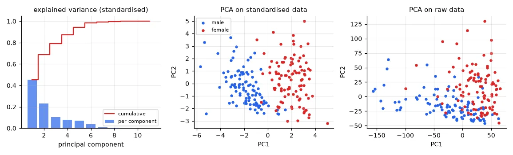
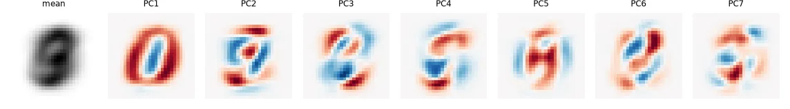
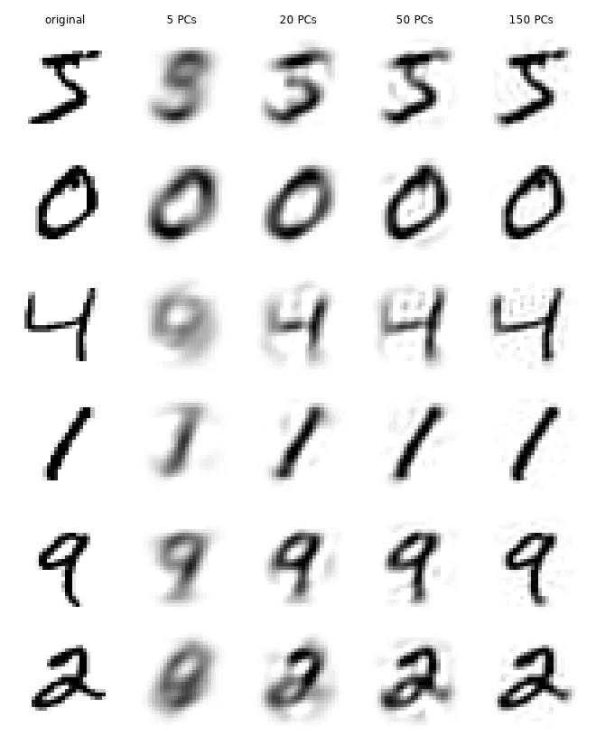
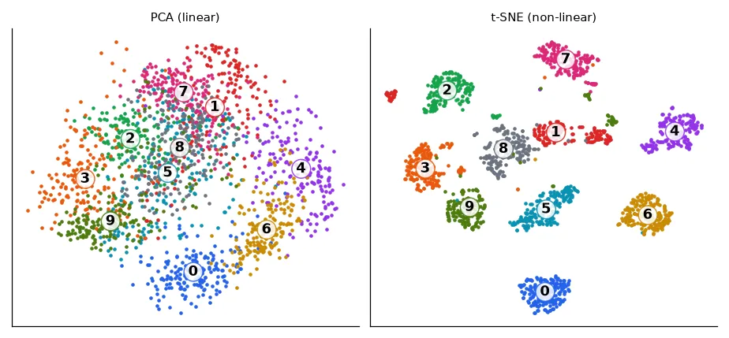

Why reduce dimensions#
The wine data of lesson 01 had 11 features but sugar and density said almost the same thing. An MNIST digit has 784 pixels, but most combinations of 784 values are noise, not digits — real digits live near a much smaller subset of that space. Dimensionality reduction finds a low-dimensional description that keeps what matters, to visualise data in 2-D, compress it, remove noise, or speed up and regularise a later model.
PCA: the directions of largest variance#
Principal component analysis looks for the unit vector \(\mathbf{u}\) such that the projections \(\mathbf{u}^\top\mathbf{x}_i\) of the centred data have the largest possible variance. That variance is \(\mathbf{u}^\top \Sigma\, \mathbf{u}\), where \(\Sigma\) is the covariance matrix. Maximising it under \(\|\mathbf{u}\| = 1\) (a Lagrangian again, lesson 03) gives
The best direction is the eigenvector with the largest eigenvalue, and the variance along it is that eigenvalue. The second principal component is the best direction orthogonal to the first, and so on: the principal axes are the eigenvectors of \(\Sigma\) sorted by eigenvalue, and \(\lambda_k / \sum_j \lambda_j\) is the fraction of the total variance each one explains.
def pca(X, k):
"""Principal axes = eigenvectors of the covariance matrix, sorted by decreasing eigenvalue."""
Xc = X - X.mean(0) # PCA is about variance: centre first
cov = Xc.T @ Xc / (len(X) - 1) # (d, d)
eigval, eigvec = np.linalg.eigh(cov) # eigh: for symmetric matrices, ascending order
order = np.argsort(eigval)[::-1]
eigval, eigvec = eigval[order], eigvec[:, order]
return Xc @ eigvec[:, :k], eigvec[:, :k], eigval
Z = (X - X.mean(0)) / X.std(0) # standardised variables
proj, axes_, eigval = pca(Z, 2)
ref = PCA(2).fit(Z)
print("explained variance ratio (ours):", np.round(eigval[:4] / eigval.sum(), 3))
print("explained variance ratio (sklearn):", np.round(ref.explained_variance_ratio_, 3))
print("same axes up to sign:", np.allclose(np.abs(axes_), np.abs(ref.components_.T), atol=1e-6))
Our data: 202 Australian athletes (the ais dataset), 11 blood tests and body measurements per athlete.
URL = "https://vincentarelbundock.github.io/Rdatasets/csv/DAAG/ais.csv"
ais = pd.read_csv(U.fetch(URL, "ais.csv"))
variables = ["rcc", "wcc", "hc", "hg", "ferr", "bmi", "ssf", "pcBfat", "lbm", "ht", "wt"]
X = ais[variables].to_numpy(float) # (202, 11) blood tests and body measurements
sex = (ais["sex"] == "f").to_numpy() # used only to colour the plots
print(X.shape, "| std of each variable:", {v: round(float(s), 1) for v, s in zip(variables, X.std(0))})
(202, 11) | std of each variable: {'rcc': 0.5, 'wcc': 1.8, 'hc': 3.7, 'hg': 1.4, 'ferr': 47.4, 'bmi': 2.9, 'ssf': 32.5, ...}
explained variance ratio (ours): [0.454 0.233 0.105 0.081]
explained variance ratio (sklearn): [0.454 0.233]
same axes up to sign: True
(An eigenvector is only defined up to its sign: \(-\mathbf{u}\) is as good as \(\mathbf{u}\). Two correct PCA implementations can disagree on signs — compare absolute values.)
In practice PCA is computed with the singular value decomposition of the centred data matrix, \(X_c = U S V^\top\): the columns of \(V\) are the principal axes and \(\lambda_k = s_k^2 / (N - 1)\). It avoids forming \(X^\top X\), which squares the condition number and loses precision.
U_, S, Vt = np.linalg.svd(Z - Z.mean(0), full_matrices=False)
print("eigenvalues from the SVD: %s" % np.round(S[:4] ** 2 / (len(Z) - 1), 3),
"| from the covariance: %s" % np.round(eigval[:4], 3))
eigenvalues from the SVD: [5.016 2.57 1.163 0.894] | from the covariance: [5.016 2.57 1.163 0.894]
Standardise — or PCA finds the units#
PCA maximises variance, and variance depends on units. Ferritin is measured in ng/mL with a standard deviation of 47; red cell count in 10¹²/L with a standard deviation of 0.5.
raw_proj, raw_axes, raw_eig = pca(X, 2)
print("raw data: PC1 explains %.0f%% of the variance; its largest loadings: %s"
% (100 * raw_eig[0] / raw_eig.sum(),
{variables[i]: round(float(raw_axes[i, 0]), 2) for i in np.argsort(-np.abs(raw_axes[:, 0]))[:2]}))
print("standardised: PC1 explains %.0f%%; largest loadings: %s"
% (100 * eigval[0] / eigval.sum(),
{variables[i]: round(float(axes_[i, 0]), 2) for i in np.argsort(-np.abs(axes_[:, 0]))[:4]}))
raw data: PC1 explains 61% of the variance; its largest loadings: {'ferr': -0.98, 'ssf': 0.14}
standardised: PC1 explains 45%; largest loadings: {'lbm': -0.4, 'hg': -0.39, 'hc': -0.39, 'rcc': -0.37}
On raw data the "first principal component" is ferritin, alone: it has the biggest numbers. After standardisation (PCA on the correlation matrix) the first component combines lean body mass, haemoglobin, haematocrit and red cell count — a genuine pattern shared by several variables, which happens to separate male and female athletes.

Standardise when the variables have different units. Don't, when they share a meaningful common scale — the pixels of an image, below.
Eigen-digits and reconstruction#
Apply PCA to 5,000 MNIST digits (784 pixels each):
x_train, y_train, _, _ = U.load_mnist()
D = x_train[:5000].reshape(5000, -1) / 255.0 # (5000, 784) pixel intensities in [0, 1]
pca_d = PCA().fit(D) # no standardisation: pixels already share a scale
cum = np.cumsum(pca_d.explained_variance_ratio_)
print("components needed for 80/90/95/99% of the variance:",
[int(np.searchsorted(cum, p) + 1) for p in (0.8, 0.9, 0.95, 0.99)], "of", D.shape[1])
recon = {}
for k in (5, 20, 50, 150):
p = PCA(k).fit(D)
recon[k] = p.inverse_transform(p.transform(D[:6])) # project onto k axes, then back to 784 pixels
components needed for 80/90/95/99% of the variance: [43, 84, 148, 322] of 784
Each principal axis is itself a 784-pixel image. The reconstruction from \(k\) components is \(\hat{\mathbf{x}} = \bar{\mathbf{x}} + \sum_{j \le k} (\mathbf{u}_j^\top(\mathbf{x} - \bar{\mathbf{x}}))\,\mathbf{u}_j\): the mean digit plus a weighted sum of \(k\) "eigen-digits". PCA is the linear projection with the smallest reconstruction error for a given \(k\).


t-SNE: a non-linear map for visualisation#
PCA is linear: it can only rotate and project. The digits of different classes sit on curved, tangled surfaces, and their 2-D projection overlaps heavily. t-SNE takes another approach: it places points in 2-D so that neighbours stay neighbours — it matches the probability that two points are close in the original space with the same probability in the map, and does not care about preserving large distances.
Xs, ys = load_digits(return_X_y=True) # (1797, 64): 8x8 digits, fast enough for t-SNE
p2 = PCA(2).fit_transform(Xs)
t2 = TSNE(2, perplexity=30, init="pca", random_state=0).fit_transform(Xs)

t-SNE is a visualisation tool, not a feature extractor: distances between islands and the sizes of the islands mean little, the result depends on the perplexity (roughly, the number of neighbours considered) and on the random seed, and there is no transform for new points. Use PCA to compress features for a model; use t-SNE (or UMAP) to look at your data — including, in lesson 17, at the embeddings learnt by a neural network.
Exercises#
- Train a logistic regression on MNIST (lesson 04) on 20, 50 and 150 PCA components instead of 784 pixels. How do accuracy and training time change?
- Denoising: add Gaussian noise to the digits, fit PCA on clean training digits and reconstruct the noisy ones from 50 components. Why does this remove much of the noise?
- Run t-SNE with perplexity 5, 30 and 100 on the same digits. What changes, and what stays?